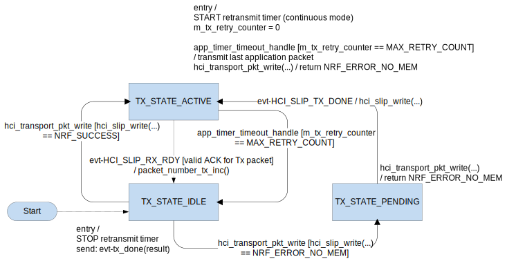

This information applies to the following SoftDevices: S132, S140
This module implements certain specific features from the three-wire UART transport layer, defined by the Bluetooth specification version 4.0 [Vol 4] part D.
- Features supported
- Transmission and reception of Vendor Specific HCI packet type application packets.
- Transmission and reception of reliable packets: defined by chapter 6 of the specification.
- Features not supported
- Link establishment procedure: defined by chapter 8 of the specification.
- Low power: defined by chapter 9 of the specification.
- Implementation specific behaviour
- As Link establishment procedure is not supported following static link configuration parameters are used:
- TX window size is 1.
- 16 bit CCITT-CRC must be used.
- Out of frame software flow control not supported.
- Parameters specific for resending reliable packets are compile time configurable (clarifed later in this document).
- Acknowledgement packet transmissions are not timeout driven , meaning they are delivered for transmission within same context which the corresponding application packet was received.
- Implementation specific limitations
- Current implementation has the following limitations which will have impact to system wide behaviour:
- Delayed acknowledgement scheduling not implemented: There exists a possibility that acknowledgement TX packet and application TX packet will collide in the TX pipeline having the end result that acknowledgement packet will be excluded from the TX pipeline which will trigger the retransmission algorithm within the peer protocol entity.
- Delayed retransmission scheduling not implemented: There exists a possibility that retransmitted application TX packet and acknowledgement TX packet will collide in the TX pipeline having the end result that retransmitted application TX packet will be excluded from the TX pipeline.
- Processing of the acknowledgement number from RX application packets: Acknowledgement number is not pocessed from the RX application packets having the end result that unnecessary application packet retransmissions can occur.
The application TX packet processing flow is illustrated by the statemachine below.

TX - application packet statemachine
- Component specific configuration options
The following compile time configuration options are available, and used to configure the application TX packet retransmission interval, in order to suite various application specific implementations:
- MAC_PACKET_SIZE_IN_BITS Maximum size of a single application packet in bits.
- USED_BAUD_RATE Used uart baudrate.
The following compile time configuration option is available to configure module specific behaviour:
- MAX_RETRY_COUNT Max retransmission retry count for applicaton packets.